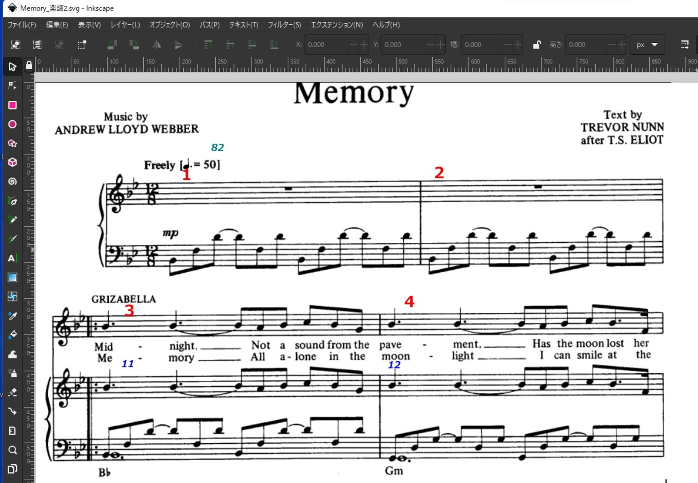
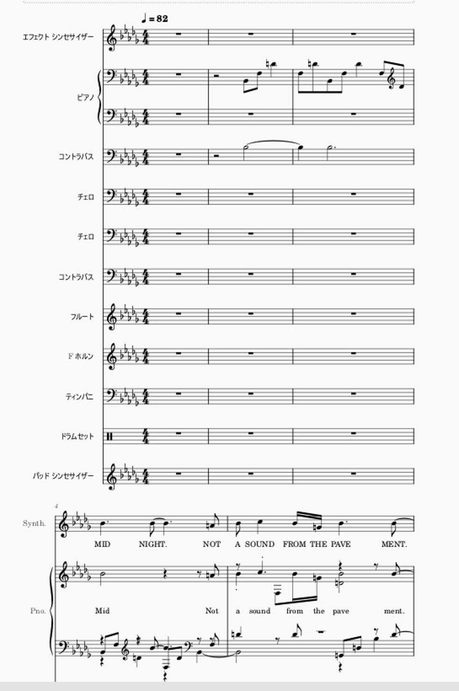
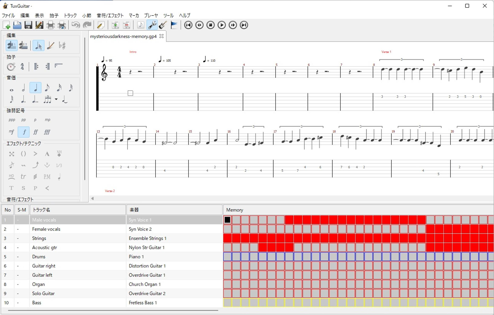

うるがいの話 ある日
最新: 音楽の時間【うるがいの話 ある日】とは 一日だけのプログです
『うるがいの話』の最新一日だけのプログで、通信料が少なく経済的だ。カニの画像をクリックすると全ての日付が載る『うるがいの話』サイトを表示します
|
|
【うるがいの話】 うるがい(ｳﾙｶﾞｲ urugai)とは、『もずくがに』の名前でとても大きくなります。 |
|---|---|
|
|
【カミマヤーの話】 猫のことを方言でマヤーといいます。カミマヤー（kamimayaa）とは、神の猫のことです。 |
|
【たながぁの音楽】 たながぁ（ﾀﾅｶﾞｰ tanagaa）とは手長えびのことで、何種類かあり大きいのは車 エビぐらいになります。 |

|
【ぶながぁの話】 ぶながぁ(ﾌﾞﾅｶﾞｰ bunagaa)とは、赤い髪の毛、赤い身体、そして身長は１ｍ２０ｃｍ ぐらい、川の蟹を食べているの目撃された。場所は沖縄県国頭郡大宜味村のと ある村僕の隣近所に住んでいる爺さんから、聞いた話です。 |
|
|
【ギーマの話】 ギーマ(giima)とは、山原の里山に咲くスズランに似た、 花を付けます。実は食べられます、 気が付くと口の周りが紫になっています。 |
2025年07月03日 (木）音楽の時間
15:27
２０００年の頃だったと思う、雑誌の付録に映画『スタンド・バイ
・ミー』の曲のＭＩＤＩデータがあり、パソコンで曲が聴けた。感
動した。その経験が、今のＤＴＭに影響しているのでしょう。
ＭＩＤＩデータとは？
音楽の演奏情報をデータ化し、電子楽器やパソコンで再生できるよ
うにしたものです。
動画の作成に当たっては、必ずネットから曲の楽譜を探します。楽
譜がないと、作成を諦めます。下は、メモリ（キャッツ）の楽譜。
ドロー系ソフトウェアInkscapeを利用して、小節番号などを記入

さらに、楽譜だけ（大抵はピアノ）ではつまらないので、ネットで
世界の有志達が作成した楽譜データを探す。今回は、二つを利用。
次は、ＭＩＤＩデータをMusescoreで取り込んだもの。

雑然としているでしょう。これを、楽譜を基本として合体させる作
業をする。合体させるには、キー（移調）、拍数や音符の調整があ
るのですヨ、一旦作成したあと三線で、弾けるか確認（スケールが
狭いので、倍音と音符の長さなど調整）し、勘所を打ち込んで完了
したのが、以前に紹介した拍数が８分の１２で始まる（楽譜に準じ
た）動画です。
次は、Musescoreの前身であるTuxgutarのデータ（拍数は４／４）

この場合は、TuxgutarのデータをMusescoreに取り込んで拍数を楽
譜に合わせるのは、無理なので楽譜の歌詞を反映させる。今回は楽
譜と異なるのでギターコードは、 採譜支援ソフトWaveToneを利用
してギターコードを設定。コードが適切かは、実際にギターで弾い
ています（ヨ！）。なお、これまで三線の弦の勘所の一つ一つ打ち
込んでいたのですが（数時間かかる）、今回は工工四で利用してい
る勘所データを利用（プログラムで加工）して、カットインペース
トの操作で効率化（５分程度か）した（スゴイ！）。
その筋の人以外は、この文書を理解できないかもしれません。マい
いか。
せっかくなので、作成した動画ヲバ、今回も長いけど。後半のソロ
がイイッス。
『Ｍｅｍｏｒｙ（ＣＡＴＳ） 三線 コモン（4分の4拍子）』
４分５６秒
https://youtu.be/CW5Qr6PHJ1U